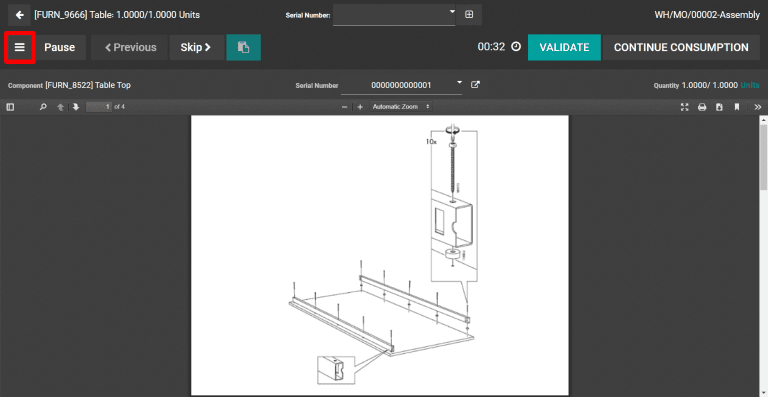

Create quality alerts¶
Configuring quality control points is a great way to ensure that quality checks are performed at routine stages during specific operations. However, quality issues can often appear outside of these scheduled checks. Using Odoo Quality, users can create quality alerts for issues that are not detected by automated processes.
See also
Find and fill out the quality alerts form¶
In some situations, it is necessary to manually create quality alerts within the Quality module.
Example
A helpdesk user who is notified of a product defect by a customer ticket can create an alert that brings the issue to the attention of the relevant quality team.
To create a new quality alert, start from the module and select . The quality alert form can then be filled out as follows:
Title: choose a concise, yet descriptive title for the quality alert
Product: the product about which the quality alert is being created
Product Variant: the specific variant of the product that has the quality issue, if applicable
Lot: the lot number assigned to the product
Work Center: the work center where the quality issue originated
Picking: the picking operation during which the quality issue originated
Team: the quality team that will be notified by the quality alert
Responsible: the individual responsible for managing the quality alert
Tags: classify the quality alert based on user-created tags
Root Cause: the cause of the quality issue, if known
Priority: assign a priority between one and three stars to ensure more urgent issues are prioritized
The tabs at the bottom of the form can be used to provide additional information to quality teams:
Description: provide additional details about the quality issue
Corrective Actions: the method for fixing affected products
Preventive Actions: procedures for preventing the issue from occurring in the future
Miscellaneous: the product vendor (if applicable), the company that produces the product, and the date assigned
Add quality alerts during the manufacturing process¶
Odoo enables manufacturing employees to create quality alerts within a work order without accessing the Quality module. From the work order tablet view, click the :guilabel:` ☰ ` hamburger menu icon in the top left corner and select Quality Alert.
The quality alert form can then be filled out as detailed in the previous section. After saving the form, a new alert will appear on the Quality Alerts dashboard that can be found through the menu.
Manage existing quality alerts¶
By default, quality alerts are organized in a kanban board view. The stages of the kanban board are fully configurable and alerts can be moved from one stage to the next by dragging and dropping or from within each alert. Additional options are available for viewing alerts, including graph, calendar, and pivot table views.
Tip
Filter alerts based on diverse criteria like date assigned or date closed. Alerts can also be grouped by quality team, root cause, or other parameters found under the Filters button menu.